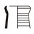
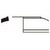
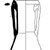
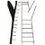
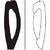
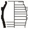

Documentation
This documentation provides a practical guide to understanding amphora morphology, typological comparison, and effective use of the filtering system. By learning how each shape component is defined — rim, neck, body, base, and handles — you can navigate the catalogue efficiently and identify amphora types with greater accuracy. Use this page as a reference while exploring the Amphora Typology Database or working on your own ceramic analyses.
- 1. Perform a morphological description — Identify and describe all visible components of the amphora (rim, neck, body, base, handles). This involves documenting the external shape and its defining features in detail.
- 2. Compare the form with known typologies — Consult regional and chronological literature to check similarities between your amphora and established types.
- 3. Assign to an existing type or define a variant/new type — Determine whether the amphora matches a recognized typology or represents a variation or new form.
- 4. Date the amphora using context and literature — Establish a chronological range supported by archaeological context, parallels, and published research. Add brief interpretative notes if needed.
- 5. Create a catalogue entry and academic description — Record the amphora following academic standards, including dimensions, morphology, typology, dating, and references suitable for publication.
How to Use Filters Effectively
To help you identify amphora types accurately, the following guide explains each morphological element used in the filtering system. Understanding these forms will allow you to narrow down typologies quickly and consistently.
Rim Types
-
 Beaded: A simple rounded lip.
Beaded: A simple rounded lip. -

Biconical: The rim appears to be two cones meeting each other. -
 Collared: The rim is noticeably thickened in the form of a collar around the neck of the amphora.
Collared: The rim is noticeably thickened in the form of a collar around the neck of the amphora. -
 Everted: The rim becomes gently wider towards the top.
Everted: The rim becomes gently wider towards the top. -
 Flanged: The rim has a distinctive flange at the top of the neck.
Flanged: The rim has a distinctive flange at the top of the neck. -
 Flaring: The rim flares out sharply, in a more pronounced manner than an everted rim.
Flaring: The rim flares out sharply, in a more pronounced manner than an everted rim. -

None: There is no apparent rim or distinctive lip of any kind. -
Pulley Wheel: This distinctive rim resembles a pulley-wheel.
-
 Rounded: The rim is gently rounded.
Rounded: The rim is gently rounded. -
 Triangular: The rim has two straight, angled sides, resembling two partial sides of a triangle.
Triangular: The rim has two straight, angled sides, resembling two partial sides of a triangle.
Neck Types
-

Broad/Wide: No information to display -

Conical: The neck is cone-shaped - it tapers upwards. -
 Cylindrical: The neck is cylinder-shaped.
Cylindrical: The neck is cylinder-shaped. -

Hourglass: The neck takes the form of an hourglass, narrowing at its mid-point. -

None: There is no distinct neck: the body of the amphora progresses smoothly upwards to the rim. -
 Short/Narrow: The neck is disproportionately short and/or narrow relative to the size of the amphora.
Short/Narrow: The neck is disproportionately short and/or narrow relative to the size of the amphora.
Shoulder Types
-
 Carinated: The shoulder displays distinct carination - a ridge where the shoulder meets the body of the amphora.
Carinated: The shoulder displays distinct carination - a ridge where the shoulder meets the body of the amphora. -
 None/Smooth: There is no shoulder: the body of the amphora is uninterrupted.
None/Smooth: There is no shoulder: the body of the amphora is uninterrupted. -
 Rounded: The shoulder is noticeably present, usually supporting the handles, but there is no ridge.
Rounded: The shoulder is noticeably present, usually supporting the handles, but there is no ridge.
Handle Features
- Handle Profile – Arched: A smooth arching curve from rim/shoulder to body.
- Handle Profile – Curved: A less symmetrical curve, often asymmetrical.
- Handle Section – Round: Circular cross‑section.
- Handle Section – Oval: Flattened or elongated oval cross‑section.
- Handle Section – Rectangular: Thick, slab‑like section.
Body Types
- Globular: Spherical body shape.
- Biconical: Two cones meeting at a mid‑point, forming a sharp profile break.
- Ovoid: Egg‑shaped, more elongated than globular.
- Cylindrical: Straight vertical walls with minimal curvature.
Base Types
- Rounded Basal Point: Typical pointed base used for stacking in ships.
- Flat: Flat resting base, common in later periods.
- Knobbed: Slight protruding knob at the base.
- Ring Foot: Circular base ring supporting upright placement.